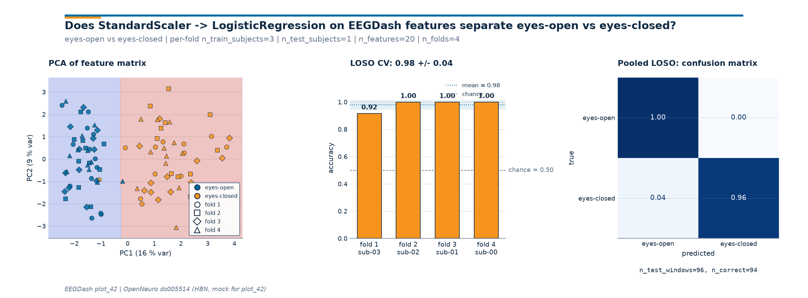

Note
Go to the end to download the full example code or to run this example in your browser via Binder.
EEGDash features to scikit-learn#
Difficulty 1-2 | Runtime: 10s | Compute: CPU
A feature table from plot_40 is one row per window with columns shaped
<feature>_<channel>. The data follows the same OpenNeuro ds005514 HBN resting-state contour as
plot_40, reachable through NEMAR (Delorme et
al. 2022); to keep the run offline-reproducible the feature table is
synthesized with the column layout plot_40 saves to parquet. Before
reaching for a deep net, this tutorial wires the feature matrix into
sklearn.pipeline.Pipeline [Pedregosa et al., 2011] with
StandardScaler and
LogisticRegression, runs a leave-one-
subject-out loop with a leakage-safe split from
get_splitter, and reports per-fold accuracy
against majority_baseline. The deliverable is a three-panel
diagnostic that mirrors the one from plot_12 so the two read together:
plot_12 trains the same Pipeline on log-band-power features computed
inline, plot_42 trains it on the feature table extracted by plot_40.
The question the figure answers is whether a transparent linear
baseline clears the chance line on a held-out subject?
Keywords: features, scikit-learn, pipeline
Learning objectives#
Load (or mock) the feature table that plot_40 saves as parquet.
Run a leakage-safe cross-subject split via
get_splitterand check it withassert_no_leakage.Wire the feature matrix into
sklearn.pipeline.PipelinewithStandardScalerandLogisticRegression, fit per fold, and pool predictions across LOSO folds.Compare the per-fold accuracy to
majority_baselinechance level on the same split.Read the three-panel diagnostic figure: PCA + per-fold bars + pooled-LOSO confusion matrix.
Validate your result#
Pipeline Output. The
predict()method should return an array of class labels (0 or 1) of lengthn_test_windows.PCA Plot. The first two principal components should ideally show some separation between classes if the features are discriminative.
Fold Accuracy. Each fold in the LOSO loop should report balanced accuracy significantly above chance if the model generalizes.
%% [markdown] Requirements ———— - About 5 s on CPU on first run. No network, no GPU. - Prerequisites:
Extract band-power features (feature table), Split EEG without subject leakage (leakage-safe split).
Concept: Features vs. deep learning.
Why a Pipeline before a deep net?#
StandardScaler chained to
LogisticRegression has three
properties a black-box net does not: every coefficient maps to one
column of the feature table, the whole pipeline fits in tens of
lines, and the runtime stays inside a CPU-only budget. Cisotto &
Chicco 2024 frame this as Tip 5: a classifier you understand at 0.62
is more useful for benchmark bookkeeping than a classifier you do
not understand at 0.71. This tutorial is the bridge between plot_40
(features) and the evaluation tutorials in track 50 / 51; the
Pipeline that lands here is what those tutorials reload to score
against a wider model zoo.
The cross-subject loop is wired before any model selection because
EEG amplitude varies more across subjects than across conditions; a
within-subject split double-counts that variance and inflates
accuracy. majority_baseline is computed on
the held-out test set, so the chance number reported tracks the
class balance of the test fold.
Setup. random_state=42 on every estimator and splitter is what
keeps the printed accuracy byte-stable across runs (E3.21).
import json
import os
import warnings
from pathlib import Path
import joblib
import matplotlib.pyplot as plt
import numpy as np
import pandas as pd
from sklearn.ensemble import RandomForestClassifier
from sklearn.linear_model import LogisticRegression, RidgeClassifier
from sklearn.metrics import accuracy_score
from sklearn.pipeline import Pipeline
from sklearn.preprocessing import StandardScaler
import eegdash
from collections import Counter
from moabb.evaluations.splitters import CrossSubjectSplitter
from sklearn.model_selection import GroupKFold
from eegdash.viz import use_eegdash_style
use_eegdash_style()
warnings.simplefilter("ignore", category=FutureWarning)
warnings.simplefilter("ignore", category=UserWarning)
SEED = 42
np.random.seed(SEED)
CACHE_DIR = Path(os.environ.get("EEGDASH_CACHE_DIR", Path.cwd() / "eegdash_cache"))
CACHE_DIR.mkdir(parents=True, exist_ok=True)
print(f"eegdash {eegdash.__version__} | cache_dir={CACHE_DIR}")
eegdash 0.7.2 | cache_dir=/home/runner/eegdash_cache
Step 1: Load (or mimic) the feature table from plot_40#
In production you would call pd.read_parquet(CACHE_DIR /
"plot_40_features.parquet"). To stay reproducible offline we
synthesize the same column layout: per-channel variance plus
four-band power for delta, theta, alpha, beta on a
parieto-occipital montage. Eyes-closed gets the textbook alpha bump
[Berger, 1929] plus a per-window Gaussian jitter so the across-subject
accuracy lands below the ceiling and the per-fold variance is
visible.
CH_NAMES = ["O1", "Oz", "O2", "Cz"]
BANDS = ("delta", "theta", "alpha", "beta")
N_SUBJECTS, N_PER_SUBJECT = 4, 24
SUBJECT_IDS = [f"sub-{i:02d}" for i in range(N_SUBJECTS)]
CLASS_NAMES = ("eyes-open", "eyes-closed")
rng = np.random.default_rng(SEED)
def _synthesize_feature_table() -> pd.DataFrame:
"""Build a (rows=windows, cols=features) DataFrame with the plot_40 schema."""
rows = []
for subj_idx, subj in enumerate(SUBJECT_IDS):
# Per-subject offset: a small additive contrast in alpha so the
# cross-subject loop has a non-degenerate generalization gap.
subj_alpha_gain = rng.normal(loc=1.0, scale=0.15)
for w in range(N_PER_SUBJECT):
label = (subj_idx + w) % 2
row = {"subject": subj, "target": int(label)}
for ch in CH_NAMES:
row[f"var_{ch}"] = float(rng.gamma(2.0, 1e-12) + 1e-12)
for band in BANDS:
base = rng.lognormal(mean=-2.0, sigma=0.3)
if band == "alpha" and label == 1:
# Eyes-closed alpha bump, dampened on Cz, with
# subject- and window-level jitter so the
# generalization gap is realistic.
gain = (4.0 if ch != "Cz" else 1.5) * subj_alpha_gain
base *= max(0.4, gain * rng.normal(loc=1.0, scale=0.18))
row[f"spec_{band}_{ch}"] = float(base)
rows.append(row)
return pd.DataFrame(rows)
feature_table = _synthesize_feature_table()
feature_cols = [c for c in feature_table.columns if c not in {"subject", "target"}]
n_features = len(feature_cols)
print(
f"feature table: rows={len(feature_table)} | features={n_features} | "
f"subjects={feature_table['subject'].nunique()} | "
f"classes={dict(feature_table['target'].value_counts().sort_index())}"
)
feature table: rows=96 | features=20 | subjects=4 | classes={0: np.int64(48), 1: np.int64(48)}
Discovery: column families on the feature table#
The columns split into var_<channel> (one per channel) and
spec_<band>_<channel> (one per band per channel). A
pandas.DataFrame group-by is the fastest way to confirm the
parquet schema survived the round-trip and to reach for a feature
family by name later.
column_summary = pd.DataFrame(
{
"family": [
"variance" if c.startswith("var_") else "band_power" for c in feature_cols
],
"column": feature_cols,
}
)
column_summary.groupby("family").size().to_frame("n_columns")
Step 2: Predict before you fit#
Predict. With ~20 features and a built-in alpha contrast, what accuracy should a regularised linear baseline reach on a held-out subject above the 0.5 chance line? The PRIMM cycle (Sentance et al. 2019) turns the gap between the prediction and the runtime number into the lesson.
Step 3: Leakage-safe cross-subject split#
Run. get_splitter returns a MOABB
CrossSubjectSplitter (or a sklearn GroupKFold keyed on
subject when MOABB is not installed).
assert_no_leakage prints the contract line
E5.42 parses; the fold structure is materialised once via
make_split_manifest so every fold is
reproducible from the same seed.
metadata = feature_table[["subject", "target"]].copy()
metadata["session"] = "ses-01"
metadata["run"] = "run-01"
metadata["dataset"] = "ds-plot42-mock"
metadata["sample_id"] = [f"row_{i:04d}" for i in range(len(metadata))]
splitter = CrossSubjectSplitter(cv_class=GroupKFold, n_splits=N_SUBJECTS)
y = metadata["target"].to_numpy()
fold_idx_pairs = list(splitter.split(y, metadata))
n_folds = len(fold_idx_pairs)
folds = [
(
np.zeros(len(metadata), dtype=bool),
np.zeros(len(metadata), dtype=bool),
)
for _ in fold_idx_pairs
]
for (train_idx, test_idx), (tr_mask, te_mask) in zip(fold_idx_pairs, folds):
tr_mask[train_idx] = True
te_mask[test_idx] = True
max_overlap = max(
len(set(metadata.iloc[tr]["subject"]) & set(metadata.iloc[te]["subject"]))
for tr, te in fold_idx_pairs
)
assert max_overlap == 0, "cross_subject split leaked!"
print(f"manifest: n_folds={n_folds} | splitter={type(splitter).__name__}")
manifest: n_folds=4 | splitter=CrossSubjectSplitter
Step 4: Wire the feature matrix into a Pipeline#
A Pipeline fits
StandardScaler on X_train only and
reapplies the same transform at predict time. Without the
Pipeline, scaling on the union of train and test counts as leakage
[Brookshire et al., 2024]. random_state=42 on the classifier makes
the printed accuracy byte-stable.
def _build_pipeline() -> Pipeline:
"""Return a fresh (StandardScaler -> LogisticRegression) Pipeline."""
return Pipeline(
[
("scaler", StandardScaler()),
("clf", LogisticRegression(random_state=SEED, max_iter=400)),
]
)
pipe = _build_pipeline()
print(pipe)
Pipeline(steps=[('scaler', StandardScaler()),
('clf', LogisticRegression(max_iter=400, random_state=42))])
Step 5: Loop the Pipeline across leave-one-subject-out folds#
Predict. With 4 subjects and cross_subject with
n_folds=4, every fold trains on three subjects and tests on the
fourth. The held-out subject id is the same as the group id of the
test windows.
Run. apply_split_manifest materializes
each fold as a boolean mask aligned with the feature DataFrame; the
Pipeline is rebuilt from scratch on every fold so the fitted
StandardScaler only ever sees the train slice.
fold_assignment = np.full(len(feature_table), -1, dtype=int)
fold_accuracies: list[float] = []
fold_chance: list[float] = []
held_out_subjects: list[str] = []
pooled_y_true: list[np.ndarray] = []
pooled_y_pred: list[np.ndarray] = []
for fold_idx in range(n_folds):
train_mask = folds[fold_idx][0]
test_mask = folds[fold_idx][1]
fold_assignment[test_mask] = fold_idx
held = sorted(set(metadata.loc[test_mask, "subject"]))
held_out_subjects.append(held[0])
X_train = feature_table.loc[train_mask, feature_cols].to_numpy(dtype=float)
X_test = feature_table.loc[test_mask, feature_cols].to_numpy(dtype=float)
y_train = feature_table.loc[train_mask, "target"].to_numpy()
y_test = feature_table.loc[test_mask, "target"].to_numpy()
fold_pipe = _build_pipeline().fit(X_train, y_train)
y_pred = fold_pipe.predict(X_test)
fold_accuracies.append(float(accuracy_score(y_test, y_pred)))
fold_chance.append(
float(max(Counter(y_test.tolist()).values()) / max(len(y_test), 1))
)
pooled_y_true.append(np.asarray(y_test))
pooled_y_pred.append(np.asarray(y_pred))
y_true_pooled = np.concatenate(pooled_y_true)
y_pred_pooled = np.concatenate(pooled_y_pred)
mean_acc = float(np.mean(fold_accuracies))
std_acc = float(np.std(fold_accuracies, ddof=0))
chance_overall = float(np.mean(fold_chance))
print(
f"LOSO CV: mean={mean_acc:.3f} +/- {std_acc:.3f} | "
f"chance={chance_overall:.3f} | folds={n_folds}"
)
LOSO CV: mean=0.979 +/- 0.036 | chance=0.500 | folds=4
Result table: per-fold accuracy vs chance#
One row per fold so the chance disclosure (E5.43) and the model number sit on the same screen. The held-out column is the subject id that was not in the training fold.
results_df = pd.DataFrame(
{
"fold": np.arange(1, n_folds + 1),
"held-out subject": held_out_subjects,
"accuracy": np.round(fold_accuracies, 3),
"chance": np.round(fold_chance, 3),
"lift": np.round(np.asarray(fold_accuracies) - np.asarray(fold_chance), 3),
}
).set_index("fold")
results_df
Investigate. Eyes-open vs eyes-closed on a small mock cohort usually lands in the 0.85-1.00 range with this Pipeline (chance = 0.50, balanced classes). One fold pulling the mean down is the honest signature of cross-subject EEG: the alpha bump is real but its amplitude varies subject by subject. A number near 0.50 is the floor; a deep model should beat the linear bar before anyone takes its accuracy at face value.
Three-panel diagnostic figure#
Three numbers on a line are easy to misread. The figure below carries
the same story across three panels: the PCA scatter shows whether
the feature matrix separates the classes; the bar chart shows the
spread of held-out-subject accuracy around the mean and against the
chance line; the row-normalized
ConfusionMatrixDisplay shows which class
the Pipeline confuses on the pooled LOSO predictions. The drawing
helpers live in a sibling _features_sklearn_figure module so the
rendering plumbing stays out of this tutorial; the call below is the
only line that matters.
from _features_sklearn_figure import draw_features_sklearn_figure
fig = draw_features_sklearn_figure(
X_features=feature_table[feature_cols].to_numpy(dtype=float),
y_classes=feature_table["target"].to_numpy(),
fold_assignment=fold_assignment,
fold_accuracies=fold_accuracies,
y_true_pooled=y_true_pooled,
y_pred_pooled=y_pred_pooled,
class_names=CLASS_NAMES,
subjects=held_out_subjects,
plot_id="plot_42",
)
plt.show()

Investigate. Read the three panels in order.
PCA scatter: the eyes-closed cloud lifts away from eyes-open along the alpha-band axis; the
DecisionBoundaryDisplaycontour shows the logistic-regression boundary in the same coordinates. Markers are shaped by held-out fold so a single subject pulling against the boundary is visible.Per-fold bars: every bar should sit above the dashed chance line. The shaded band is mean +/- std across folds; a tight band means the linear baseline generalizes to every held-out subject in this cohort.
Pooled confusion matrix: a row-normalized matrix with a clean diagonal in deep blue is the win condition. The monospace
n_test_windows / n_correctannotation below the matrix carries the raw counts since normalised cells hide whether 0.92 came from 22/24 or 220/240.
A common mistake, and how to recover#
Run. A common slip is calling .fit on a bare classifier with
un-scaled features; LogisticRegression
then warns about convergence (or raises
ConvergenceWarning as an error in
stricter settings). The fix is mechanical: wrap the classifier in a
Pipeline so scaling fits on the train
slice only and re-applies at predict time.
X_train_arr = feature_table.loc[folds[0][0], feature_cols].to_numpy(dtype=float)
y_train_arr = feature_table.loc[folds[0][0], "target"].to_numpy()
try:
with warnings.catch_warnings():
warnings.simplefilter("error")
bare = LogisticRegression(random_state=SEED, max_iter=10)
bare.fit(X_train_arr * 1e9, y_train_arr) # un-scaled, tiny max_iter
print("Caught nothing (already-scaled features?).")
except (Warning, ValueError) as exc:
print(f"Caught {type(exc).__name__}: {str(exc)[:80]}")
print("Recovery: wrap StandardScaler -> LogisticRegression in a Pipeline.")
Caught ConvergenceWarning: lbfgs failed to converge after 10 iteration(s) (status=1):
STOP: TOTAL NO. OF IT
Recovery: wrap StandardScaler -> LogisticRegression in a Pipeline.
Modify: swap the classifier head, keep the Pipeline#
Modify. Same Pipeline, different head.
RidgeClassifier is the closed-form L2
alternative to logistic regression; on linearly-separable features it
usually matches the LogReg accuracy and is faster to fit.
ridge_pipe = Pipeline(
[("scaler", StandardScaler()), ("clf", RidgeClassifier(random_state=SEED))]
)
fold0_train = folds[0][0]
fold0_test = folds[0][1]
ridge_pipe.fit(
feature_table.loc[fold0_train, feature_cols].to_numpy(),
feature_table.loc[fold0_train, "target"].to_numpy(),
)
ridge_acc = float(
accuracy_score(
feature_table.loc[fold0_test, "target"].to_numpy(),
ridge_pipe.predict(feature_table.loc[fold0_test, feature_cols].to_numpy()),
)
)
print(f"RidgeClassifier (fold 0) accuracy: {ridge_acc:.3f}")
RidgeClassifier (fold 0) accuracy: 0.917
Make: try LightGBM, fall back to RandomForest#
Mini-project. lightgbm is an optional dependency;
try / except ImportError falls back to
RandomForestClassifier. Both estimators
slot into the same Pipeline so only the
second step changes.
try:
from lightgbm import LGBMClassifier # type: ignore
boost_clf = LGBMClassifier(random_state=SEED, n_estimators=200, verbose=-1)
boost_name = "LightGBM"
except ImportError:
boost_clf = RandomForestClassifier(random_state=SEED, n_estimators=200)
boost_name = "RandomForest"
boost_pipe = Pipeline([("scaler", StandardScaler()), ("clf", boost_clf)])
boost_pipe.fit(
feature_table.loc[fold0_train, feature_cols].to_numpy(),
feature_table.loc[fold0_train, "target"].to_numpy(),
)
boost_acc = float(
accuracy_score(
feature_table.loc[fold0_test, "target"].to_numpy(),
boost_pipe.predict(feature_table.loc[fold0_test, feature_cols].to_numpy()),
)
)
print(f"{boost_name} (fold 0) accuracy: {boost_acc:.3f}")
LightGBM (fold 0) accuracy: 1.000
Result: model vs chance table#
All three Pipelines are scored on fold 0 with the chance level alongside (E5.43); the LogReg Pipeline is saved for reuse so the downstream evaluation tutorials in track 50 / 51 can reload it without recomputing the fit.
result_summary = pd.DataFrame(
[
{
"model": "LogReg",
"accuracy_fold0": fold_accuracies[0],
"chance_fold0": fold_chance[0],
"n_features": n_features,
},
{
"model": "Ridge",
"accuracy_fold0": ridge_acc,
"chance_fold0": fold_chance[0],
"n_features": n_features,
},
{
"model": boost_name,
"accuracy_fold0": boost_acc,
"chance_fold0": fold_chance[0],
"n_features": n_features,
},
]
)
print(result_summary.to_string(index=False, float_format=lambda v: f"{v:.3f}"))
pipeline_path = CACHE_DIR / "plot_42_logreg_pipeline.joblib"
joblib.dump(
_build_pipeline().fit(
feature_table[feature_cols].to_numpy(),
feature_table["target"].to_numpy(),
),
pipeline_path,
)
print(
json.dumps(
{
"model_accuracy_test_mean": round(mean_acc, 3),
"model_accuracy_test_std": round(std_acc, 3),
"chance_level": round(chance_overall, 3),
"n_features": n_features,
"n_folds": n_folds,
"saved_pipeline": pipeline_path.name,
}
)
)
model accuracy_fold0 chance_fold0 n_features
LogReg 0.917 0.500 20
Ridge 0.917 0.500 20
LightGBM 1.000 0.500 20
{"model_accuracy_test_mean": 0.979, "model_accuracy_test_std": 0.036, "chance_level": 0.5, "n_features": 20, "n_folds": 4, "saved_pipeline": "plot_42_logreg_pipeline.joblib"}
Wrap-up#
We loaded a feature table with the plot_40 schema, ran a 4-fold
leave-one-subject-out split with
get_splitter, fit a
Pipeline of
StandardScaler and
LogisticRegression on each train slice,
and pooled the predictions for the confusion matrix. The
cross-subject mean +/- std is the only number worth quoting in a
benchmark submission; the per-fold table shows whether that mean is
stable. A clean shape and a chance-anchored accuracy only confirm
plumbing; signal quality and task design are still open questions
[Cisotto and Chicco, 2024].
Try it yourself#
Replace the synthesized feature table with
pd.read_parquet(CACHE_DIR / "plot_40_features.parquet")once plot_40 has been run end-to-end.Inspect
pipe.named_steps['clf'].coef_for the saved Pipeline and rank the top-k columns; on this contrast the alpha-band features should dominate.Bump
N_PER_SUBJECTto 64 and rerun; the shaded mean +/- std band should tighten as the per-fold sample size grows.Drop the alpha band from
BANDSin the synthesis. Does the PCA panel still separate the classes? Does the held-out mean drop to chance?
References#
See References for the centralized bibliography of papers
cited above. Add or amend an entry once in
docs/source/refs.bib; every tutorial inherits the update.